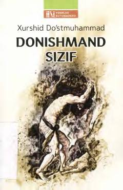

DSSizif obrazida iroda va donishmandlikni ulug'lovchi falsafiy roman.
Xurshid Do'stmuhammad qalamiga mansub bu roman yunon mifologiyasidagi Sizif obrazi orqali sabr-toqat, iroda va kurash mavzularini zamonaviy nuqtai nazardan yoritadi. Korinf hokimi Sizif og'ir xarsangni cho'qqiga dumalatib chiqarishga mahkum etilgan bo'lsa-da, roman uni mashaqqatlardan ustun kelgan donishmand inson sifatida tasvirlaydi. Asar 2019-yilda Yoshlar nashriyot uyi tomonidan nashr etilgan.